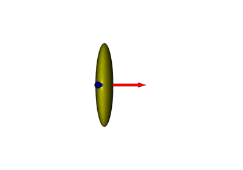
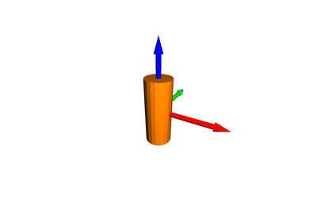

3D Visualizations# Visualize Sphere Visualize Sphere  Visualize Ellipsoid Visualize Ellipsoid Visualize Coordinate Frame Visualize Coordinate Frame Visualize Cone Visualize Cone Visualize Capsule Visualize Capsule Visualize Vector Visualize Vector Scatter Plot Scatter Plot Visualize Plane Visualize Plane Plot Box Plot Box Visualize Mesh Visualize Mesh Animate Rotation Animate Rotation Visualize Transformed Cylinders Visualize Transformed Cylinders Camera Representation in 3D Camera Representation in 3D Animate Line Animate Line  URDF with Meshes URDF with Meshes Animated URDF with Meshes Animated URDF with Meshes Add and Remove Artist Add and Remove Artist  Animate Trajectory Animate Trajectory Animated Robot Animated Robot  Visualize Cylinder with Wrench Visualize Cylinder with Wrench URDF Joints URDF Joints Visualize Wrench Visualize Wrench Probabilistic Product of Exponentials Probabilistic Product of Exponentials